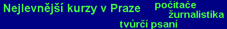

TvĹŻrÄŤĂ psanĂ
> Hra se slovy
©
Radek Sárközi
HRA SE SLOVY
Lekce 05
Pro nÄ›kterĂ© autory je literárnĂ tvorba zcela zásadnĂ vÄ›cĂ, do kterĂ© vkládajĂ všechny svĂ© city (Mácha), myšlenky (Holan) a kam vytÄ›sĹ